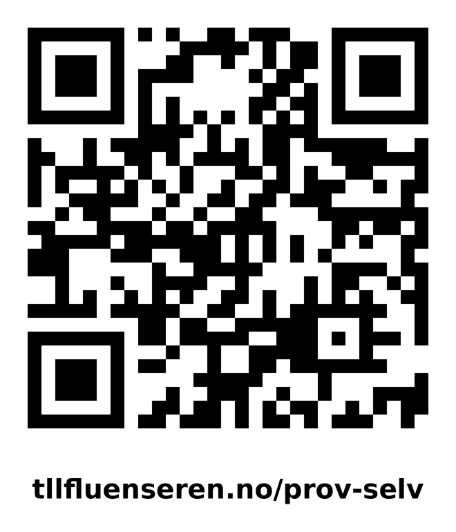

Foredrag · Kollegaer i Rogaland
KI og interaktive oppgaver
Fem minutter om hvordan jeg bruker kunstig intelligens til å lage oppgaver, språkstøtte og øving for elevene på Vg2 Transport, logistikk og løfteoperasjoner. Alt fra foredraget ligger her.
Når læreren snakker ukrainsk
Jeg kan ikke ukrainsk. En KI-avatar av meg kan – med norsk tekst under. Det samme gjelder teoriprøven i løfteredskap (G11), som elevene kan få lest opp på engelsk og ukrainsk.
TLLfluenseren på 90 sekunder
Én nettside for hele faget. Elevene jobber i sitt eget tempo, på tre nivåer, og alt lagres bare i deres egen nettleser.
Bli TLL-elev i 60 sekunder
Tre spørsmål om lastsikring og løfteredskap. Skann koden med mobilen.

Ditt tema – laget mens vi ser på
Salen velger et tema fra sitt eget fag. Jeg setter det inn i oppskriften under og lar KI-en lage en interaktiv oppgave. Kopier oppskriften og prøv den selv i en KI-tjeneste skolen din har godkjent.
Lag én interaktiv HTML-side om temaet: [TEMA] Målgruppe: elever på Vg1/Vg2 yrkesfag. Skriv på enkel bokmål. Innhold: 1. Tittel og én setning om hvorfor temaet er viktig i yrket. 2. Fem flervalgsspørsmål (A–C). Eleven får svar med en gang: grønt for riktig, rødt for feil, og én kort forklaring. 3. Ett kort praksiscase fra en realistisk arbeidsdag, med ett åpent spørsmål. 4. En poengteller øverst. Design: stor skrift som er lett å lese på storskjerm, tydelige knapper, rolige farger. Alt i én fil. Ikke still oppfølgingsspørsmål. Lag siden med en gang.
Slik blir resultatet
Denne oppgaven ble laget med nøyaktig samme oppskrift, med temaet «varemottak på lager». Jeg sjekket fagstoffet før den ble lagt ut – det gjør jeg alltid.
KI lager ikke undervisningen for meg – men den lar meg lage ti ganger så mye, tilpasset hver elev.
Kom i gang selv
- Start smått: én oppgave til ett tema du skal ha neste uke.
- Lås formatet: bestem selv hva KI-en skal lage. Da blir resultatet bedre og raskere.
- Sjekk alltid fagstoffet før elevene får det. KI kan ta feil med stor selvtillit.
- Ingen elevdata: ikke legg inn navn eller vurderinger i KI-tjenester skolen ikke har godkjent.